Basiliso Serrano Valero
El Manco de La Pesquera
En la casa llamada de "la cirujana” en el paraje de "El Molinillo” perteneciente al término municipal del pueblo conquense de La Pesquera, nació el miércoles 15 de abril de 1908, a las cinco de la tarde, Basiliso Patrocinio Serrano Valero.

Era el quinto hijo, el más pequeño, del matrimonio formado por el cirujano Francisco Serrano y Rosario Valero, originarios de la provincia de Albacete pero llevaban afincados ya muchos años en La Pesquera. La familia fue humilde, como todos sus convecinos, sacaban a sus hijos adelante a fuerza de trabajo y esfuerzos. La vida para él empezó con más dureza, sin llegar al año de vida su padre falleció.
Basiliso dio desde pequeño pruebas de un carácter recio
y fuerte, además de dotes de mando y un carisma personal que no
se correspondían con el oficio de pastor, que teóricamente
debía corresponderle.
Por los inmensos pinares de su pueblo y sólo acompañado
por sus cabras, quien sabe que pasaría por su cabeza, sabemos que
al igual que Miguel Hernández, él escribía versos
y leía libros seguramente clandestinos que alguien le proporcionaba
y que le fueron abriendo a un mundo nuevo. Fue allí en esa soledad
donde empezó a germinar en él la semilla de la inconformidad,
con el mundo que lo rodaba y que lo relegaba a ser toda su vida pastor,
sin más aspiraciones que su rebaño, sólo por haber
nacido pobre, aunque su inteligencia superaba con creces, sus limitaciones
materiales.
Cuando en España se proclamó la república, Basiliso
Serrano fue miembro destacado de la CNT en su pueblo, impidiendo desmanes
y reyertas que en otros pueblos si se produjeron. Hasta sus enemigos le
han reconocido siempre que salvó muchas vidas, entre ellas la del
sacerdote vecino de su pueblo Alfonso Bonilla, amigo personal suyo.
"Aquí no sobra nadie, falta pan y faltan brazos, compañeros."
Fueron las palabras de Basiliso Serrano en la Plaza Mayor de La Pesquera, pronunciadas ante los milicianos de la CNT. Basiliso dejaba constancia de su oposición firme como responsable del sindicato anarquista a que se efectuase ninguna purga ni contra destacados derechistas ni contra el párroco de su propio pueblo.
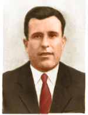
El 23 de abril de 1933 se casó en La Pesquera con Rufina Monteagudo Ponce.
- La fotografía de la corbata corresponde al día de su boda.
Al estallar la guerra, Basiliso lucho por la libertad y la democracia
que representaba la república, y al acabar la contienda volvió
a su pueblo sabiendo que tendría que relegar sus sueños
e ilusiones otra vez al mundo de la utopía pues habían sido
derrotados. Llegó la posguerra que fue mucho más injusta
y sangrienta que la propia guerra. Basiliso tuvo que huir al monte y vivir
allí escondido, sabiendo que algunos a los que él había
salvado la vida podían traicionarlo en cualquier momento.
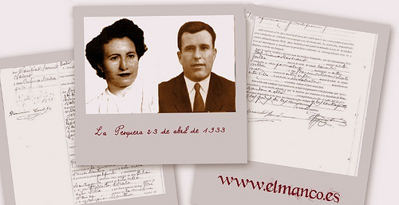
En la fotografóa Basiliso y su mujer Rufina Monteagudo Ponce.
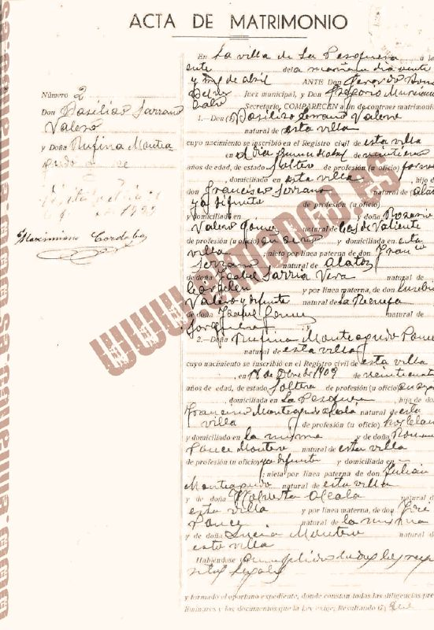
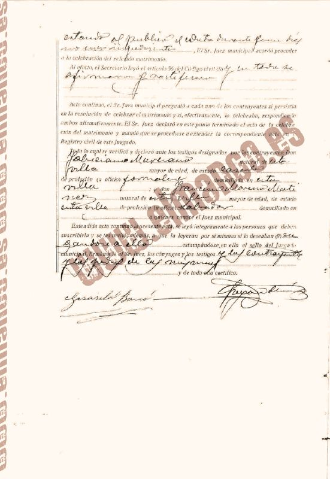
Durante su periodo de semihuido después de postguerra dejo su constancia en un árbol situado en las hoces del Cabriel. En el árbol se puede leer "LO ESCRIBIO BASILISO SERANO (falta una R) NATURAL DE LA PESQUERA" junto con una fecha que se puede leer 1945 y un animal dibujado. Por detrás del árbol se aprecian unas cuevas.
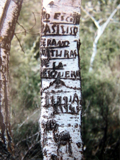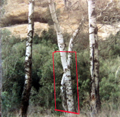
Fotos de L. Carrasco.
Sabía del maltrato al que estaba sometida su familia por parte de la Guardia Civil, su mujer, su hermana, su sobrino Paco que decidió irse al monte con él harto de torturas y palizas.
Inicio de su etapa guerrillera
Se incorporó a la guerrilla el 15 de febrero de 1946, al encontrase
causalmente con una partida. Basiliso o Fortuna (como fue apodado dentro
de la guerrilla) y sus compañeros mantuvieron en jaque a las fuerzas
represivas, durante siete años de guerra en el monte, impidiendo
la normalización de un estado nacido de la violencia.
Los protagonistas de aquel encuentro en La Pesquera reunidos otra vez en esta fotografóa.
Fotografías del libro:
Los guerrilleros de Levante y Aragón, Tomebamba, Cuenca, 2007. Salvador F. Cava.
En el primer semestre de este año de 1946 el grupo de Requena no realiza apenas acciones, antes bien parece que está consolidándose, creando lazos y fijando campamentos a los que se incorporan nuevos guerrilleros, a la vez que establece sus relaciones con el Regional de Valencia. La acción más destacada y que de hecho supone, en imagen deportiva, el pistoletazo de salida, será el asalto al pagador de las obras de la central del Pajazo, en La Pesquera.
El día 15 de febrero los tres componentes incorporados desde Francia, "Jalisco”, "Prudencio” y "Tomás” contactan con un el huido más famoso de la provincia de Cuenca, Basiliso Serrano Valero el "Manco de La Pesquera”, o "Fortuna” a partir de entonces, en los aledaños de su pueblo. El "Manco de La Pesquera” será el primer incorporado a la guerrilla en lo que se denominará posteriormente el 5º Sector. El grupo de "Jalisco”, que desde este momento pasa a estar dirigido por "Tomás” al ostentar la mayor graduación de sus tres componentes en la Resistencia francesa, tiene noticias de las obras que se están realizando en la central del río Cabriel en el Pajazo. Por esas fechas su base está situada en el paraje de Cuevas de Ginesito (Requena) pero se desplazan por toda la comarca buscando sobre todo el refugio de Las Hoces del afluente del río Júcar. Al conocer al "Manco”, y es de imaginar que alguna información previa tendrían sobre él, le preguntarán si quería unirse a ellos y si conocía dónde estaba la casa del pagador. La respuesta positiva de Basiliso Serrano y su decisión de colaborar con el trío significó dar un giro radical a su vida de semi-huido, pues en realidad no constaba denuncia contra él, y empezar así lo que sería una vida de resistencia y de leyenda.
El mito se inicia, cuando aquel hombre bueno permanecía escondido
en el monte, cerca de su pueblo y surge su leyenda como el famoso maqui
que robaba a los ricos y protegía a los pobres con el nombre de
"El Manco de La Pesquera” apodo que le fue dado por faltarle
algunos dedos de la mano izquierda, perdidos cuando estaba preparando
un explosivo el día de la fiestas mayores en La Pesquera, el 16
de agosto. Casualmente pasaba la procesión de San Roque, el ruido
de la explosión se ocultó con los petardos de la procesión.
Cuando estaba preparando su evacuación a Francia, fue detenido
por la Guardia Civil el 27 de abril de 1952 en Cofrentes (Valencia).
El final de Basiliso
Cuando terminó la Guerra Civil, Fructuoso vivió en Las Viñuelas. Recuerda que por aquella zona andaba un maqui llamado el Manco de la Pesquera. La Guardia Civil lo capturó en un barranco cerca de Castiblanques y le llevaron a casa del tóo de Fructuoso, que era alcalde de aquel municipio. Fructuoso habóa ido en bicicleta a ver a su tóo y al llegar alló le pidieron que llevara al Guardia Civil que habóa capturado al maqui junto al resto de los guardias civiles, a 8 kilómetros de donde se encontraban. Este Guardia Civil se llamaba ólvaro Casado Maestre y aóos mós tarde fue nombrado director de la Academia en Valdemoro.
Después de su detención en 1952, en alguna ocasión paso por la ciudad de Cuenca para ser interrogado. Custodiado por la guardia civil, estará durante una temporada en la antigua comandancia, sita en la calle Colón, y hasta se reunirá en al menos una ocasión con el propio gobernador civil de Cuenca Gabriel Juliá y otros cargos de su plana de orden público y tomará café en su propio despacho.
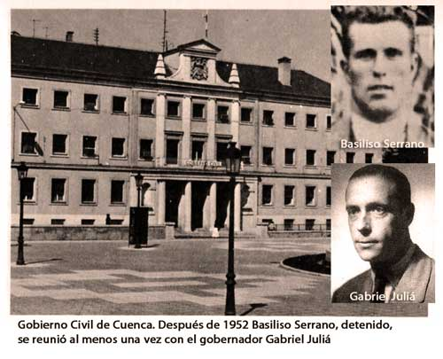
Conducido a la prisión de valencia fue juzgado y condenado a muerte
el 4 de noviembre de 1955.
A las 7.15 h del 10 de diciembre de 1955, en el cuartel militar de Paterna
(Valencia), seis guardias civiles al mando de su capitán segaron
la vida de Basiliso Serrano Valero, ”el Manco de La Pesquera”,
moría el hombre y nacía el mito.
Fue enterrado en el nicho 475 del Cementerio de Paterna. Cincuenta años después, el 9 de diciembre de 2005 se exhumaron sus restos. El 10 de diciembre de 2005, Basiliso volvió a La Pesquera donde descansará para siempre en una humilde tumba del cementerio de su pueblo.
La última foto de Basiliso Serrano, Septiembre de 1955:
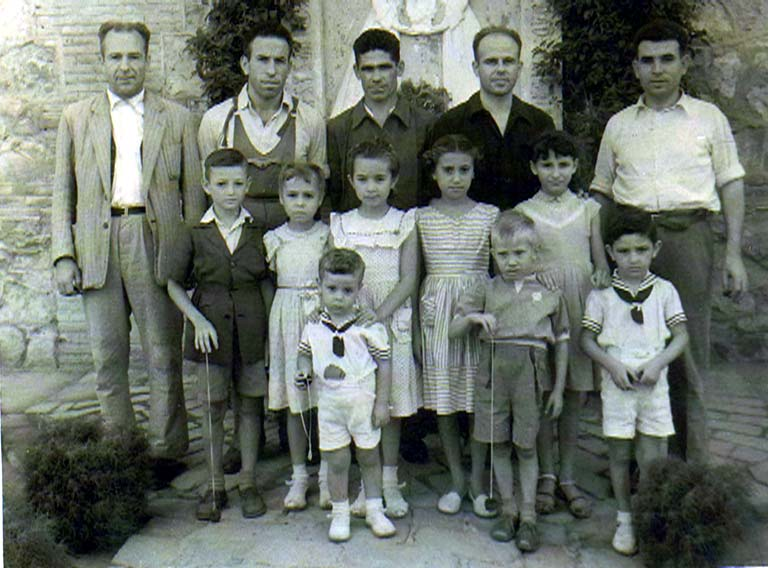
El Manco es el que se situa a la izquierda. Foto cedida por José
Navarro "Andrés" (segundo por la derecha), y tomada del
segundo volumen de "Los guerrilleros de Levante y Aragón"(2007
Ed. Tomebamba) de Salvador F. Cava. En la foto también se halla
Fructuoso Soriano "Ricardo" al lado de Basiliso, los tres guerrilleros
de la AGLA, los otros dos son también presos
políticos, el del centro de La Mancha. La foto fue realizada por
el fotógrafo Hipólito Abraila en la prisión provincial
de Valencia, probablementes el día 24 de septiembre de 1955, meses
antes de ser fusilado.
En noviembre de 2008, se presentó en el Congreso de Los Diputados en Madrid, el libro de Los Guerrilleros de Levante y Aragón de Salvador F. Cava. Fue también un particular homenaje a los guerrilleros antifranquistas.
En la siguiente instantánea de la presentación, en el fondo imagen de guerrilleros, entre ellos Basiliso Serrano el Manco de La Pesquera. Como ponentes de izquierda a derecha: Eligio Hernández (ex-Fiscal General del Estado), Juan Ávila (Presidente de la Diputación de Cuenca) y Santiago Carrillo (ex- Secretario General del PCE):
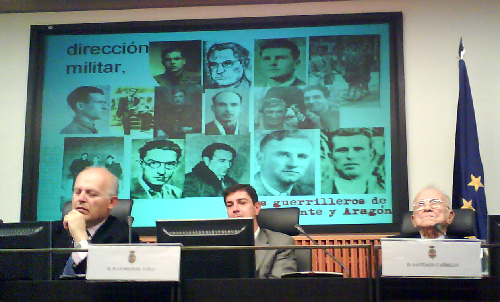
En el año 2009 apareció una foto inédita de Basiliso en la portada del libro Memorias de un luchador antifranquista. De Yecla a Benicalap por las montañas del maquis, del guerrillero José Navarro Pascual, ejemplo de resistencia y lucha contra la dictadura franquista. Compañero de Basiliso Serrano en la prisión de Valencia, aparecen junto a otros guerrilleros en dos fotografías. La imagen inédita data de 1952, año en que capturaron a Basiliso.
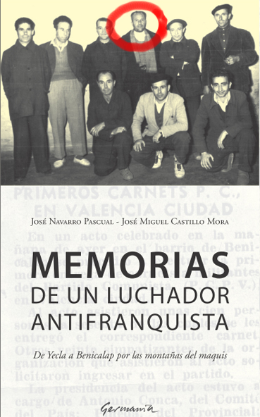
En el año 2019, se publicó la segunda biografía sobre el Manco de La Pesquera.
El 29 de septiembre de 2023 el Ministro de la Presidencia del Gobierno de España, firmaba el documento de reconocimiento y la reparación moral para el Manco, que sufrió las consecuencias de la Guerra Civil y la Dictadura, y para sus familiares. Con ello se anulaba la sentencia de muerte de Basiliso Serrano Valero.
Poemas escritos por Basiliso: ROMANCE DEL MANCO DE LA PESQUERA
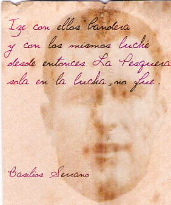En una barca Pesquera en olas
de una mar embravecida
vi. la luz por vez primera
en esta mísera vida.
Y lanzada por los vientos
que conduce el egoísmo
conocí los sufrimientos
de este terrible fascismo.
En esta mar encontré
en una dura pelea
y entonces me percaté
que defendía una idea.
Quise orientarme
pues yo quería vencer
y entonces vine a encontrarme
en un nuevo amanecer
Vi navegar mucha gente
unidos y con amor
que también hacían frente
a ese egoísmo traidor.
Izé con ellos bandera
y con los mismos luché
desde entonces La Pesquera
sola en la lucha, no fue.
Estas son las columnas
que conducen a la paz
de aquellas obras tan dignas
que nos legó Carlos Marx.
Vi formar orgullosa
a la masa proletaria
para seguir valerosa
a su jefa Pasionaria.
Esa es nuestra Capitana
que va formando en cabeza
con la obra más humana
que se conoce en justeza.
Con inteligencia asombrosa
nos dice: jamás debéis olvidar
que nuestra fuerza es poderosa
conservando la unidad.
Con disciplina consciente
justeza y sinceridad teniendo
siempre presente
que nuestro lema es luchar.
Y si algún día solos os veis
al teneos que orientar
allá tenéis al "Crelín"
que sirve de estrella polar
dirigida por Stalin
en la tierra y por la mar.
Allí se vive el amor
sin cadenas ni tiranos
es un pueblo trabajador
que terminó con los amos.
Nosotros también luchamos
por conseguir el mismo amor
siguiendo a esos hermanos
que es nuestro máximo honor.
¿Veis esta mar embravecida
que al mundo quiere arrancar?
Ya le queda poca vida
la podemos dominar.
Y si en este oleaje
entre nubes y colores
vi una mujer sin ropaje
y a miles de trabajadores
decir con fuerza y coraje
¡ Esa es mi madre! ¡ Es Dolores!
Fortuna.
ENTRE FOLLAJES Y VENEROS
Entre follaje y veneros
tras los últimos Puntales,
existen los matorrales
donde viven guerrilleros.
Sin diferencias sociales
pero sí con gran respeto
y con disciplina de razón
levantando su bandera
para vencer la opresión.
Ondeando está gozosa
por ciudades y montañas
pues ella se encuentra orgullosa
como rosa en la pradera
en ser bandera de España
de la fuerza Guerrillera.
Hombres en lucha sin par
vais venciendo al opresor
y al pueblo trabajador
le daréis la libertad.
Deslizándose por oscuras brisas
como las agua bravías
vais con estrellas y risas
a hacer las centrales trizas
o a los trenes en las vías.
Ajusticiar a un traidor o
frente a la Guardia Civil
chivato o malhechor
sinvergüenza o persona vil.
Así corréis por la Plana
o empinadas laderas
cundiendo vuestro
valor y fama
controlando carreteras,
hablando a los campesinos
ciudadanos o de aldea.
Y vais corriendo caminos
por defender vuestra idea
de acabar con la Falange,
Franco y su mala ralea.
Les habló a los guerrilleros
a todas castas sociales
que también son caballeros
aunque estén en los Puntales.
(Fortuna)